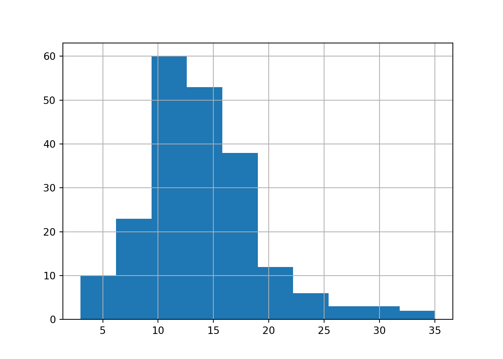
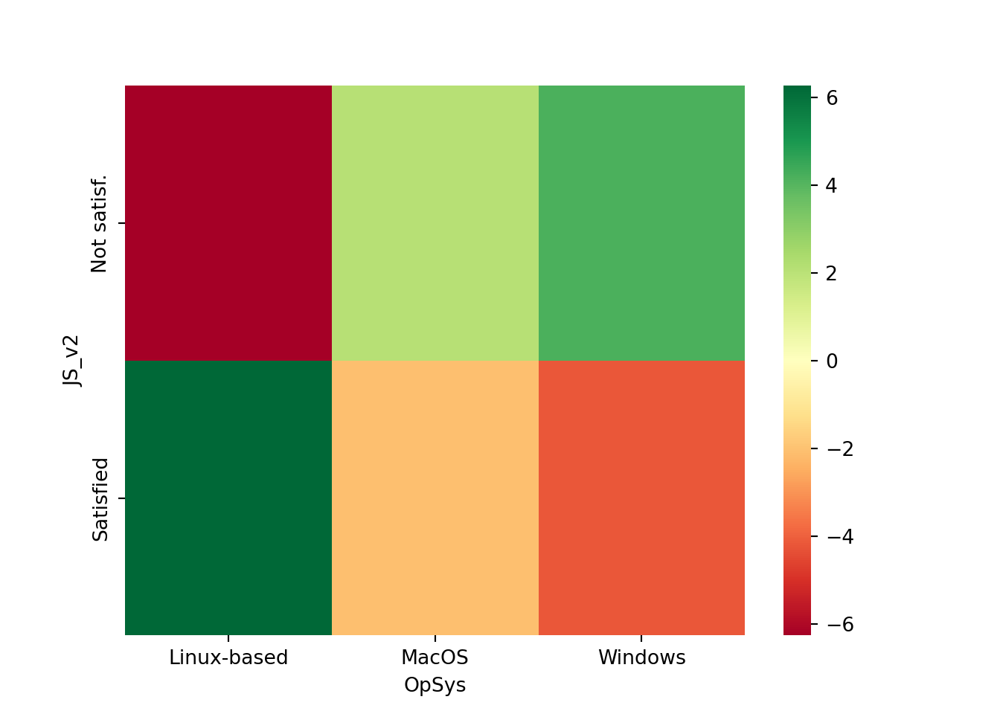

11 Nemparaméteres próbák
11.1 Nemparaméteres próbák elve
Továbbra is hipotézisvizsgálatokat végzünk.
EDDIG az úgynevezett paraméteres próbák esetét vizsgáltunk. Ekkor statisztikai mutatószámokra, azaz statisztikai paraméterek (pl. átlagra, szórásra, arányra, stb.) lehetséges sokasági értékeire fogalmaztunk meg állításokat, hipotéziseket.
MOST az úgynevezett nemparaméteres próbák esetét kezdjük vizsgálni. Ekkor ismérvek sokasági eloszlására vonatkozó állításokat, hipotéziseket teszünk. Ugyebár egy ismérv eloszlása gyakorlatilag azt jelenti, hogy megadjuk, hogy a lehetséges ismérvértékek milyen arányban fordulnak elő. Szóval valójában nagyon sok arány értékéről egyszerre mondunk itt valamit a hipotézisben megfogalmazott alapállításainkban.
De a négy alaplépés változatlan az eddigiekhez képest!
- \(H_0\) és \(H_1\) felírása
- Próbafüggvény számítása a megfigyelt mintából
- A p-érték számítása próbafüggvény és egy nevezetes eloszlás alapján
- Döntés p-érték alapján \(\rightarrow H_0\) vagy \(H_1\) vehető-e igaznak a sokaságban?
A nemparaméteres próbák témakörét a StackOverflowHungary2020.xlsx adattáblán járjuk majd végig, ami a Stack Overflow programozói közösségi oldal 2020-as felmérése a világ amatőr és profi programozóiról 60 változó szerint. A teljes adatbázis (és a korábbi+újabb évek felmérései) erről a linkről elérhető.
A mi Moodle-n található Excel fájlunkban csak a 2020-as felmérés 210 magyar kitöltőjének válaszai szerepelnek az alábbi 9 változó szerint :
- Age: A válaszadó életkora (év)
- Age1stCode: A válaszadó életkora első sor programkódjának megírásakor (év)
- YearsCodePro: Programozási tapasztalat a tanulmányokat nem beleszámítva (év)
- MonthlyHuf: Havi bruttó fizetés Forintban
- Gender: Válaszadó neme
- EdLevel: Legmagasabb befejezett iskolai végzettség
- Employment: Foglalkoztatási státusz (teljes munkidő; részmunkaidő; egyéni vállalkozó)
- JobSat: Elégedettség a jelenlegi munkahelyen
- OpSys: Használt operációs rendszer (Windows; Linux; MacOS)
Töltsök be az adatbázist az Excelből egy pandas data frame-be és nézzük meg az info metódussal megvan-e minden fenteb felsorolt ismérvünk!
# Elemzéshez és ábrázoláshoz szükséges csomagok betöltése
import numpy as np
import pandas as pd
import matplotlib.pyplot as plt
import scipy.stats as stats
# StackOverflow 2020-as kérdőív magyar kitöltő adatainak beolvasása
sfH = pd.read_excel("StackOverflowHungary2020.xlsx")
sfH.info()## <class 'pandas.core.frame.DataFrame'>
## RangeIndex: 210 entries, 0 to 209
## Data columns (total 9 columns):
## # Column Non-Null Count Dtype
## --- ------ -------------- -----
## 0 Age 210 non-null int64
## 1 Age1stCode 210 non-null int64
## 2 YearsCodePro 210 non-null float64
## 3 MonthlyHuf 210 non-null float64
## 4 Gender 210 non-null object
## 5 EdLevel 210 non-null object
## 6 Employment 210 non-null object
## 7 JobSat 210 non-null object
## 8 OpSys 210 non-null object
## dtypes: float64(2), int64(2), object(5)
## memory usage: 14.9+ KBOlybá tűnik, mind a \(210\) megfigyelésünk és a vizsgált \(9\) változónk. Yeah! :)
11.2 Illeszkedésvizsgálatok
A nemparaméteres próbák egyik nagy alesete az illeszkedésvizsgálatok esete. Ekkor mindig azt vizsgáljuk, hogy a megfigyelt mintaelemek eloszlása illeszkedik-e valami általunk megadott elméleti eloszláshoz (pl. egyenletes eloszlás vagy normális eloszlás, ilyesmik).
11.2.1 Reprezentativitás vizsgálat
Reprezentativitás egy ismérv szerint: a minta eloszlása egy konkrét ismérv szerint kb. ugyan az, mint az ismérv eloszlása a teljes adatsokaságban.
A KSH 2020-as adatai szerint a magyar infokommunikációs-szektorban tevékenykedők
- \(85\%\)-a teljes állásban foglalkoztatott,
- \(4\%\) részmunkaidős
- \(11\%\) egyéni vállalkozó.
Ezen munkakör tíous arányok (azaz munkakör típus eloszlás) mellett reprezentatív-e a StackOverflow kérdőív magyar mintája munkakör típusra?
Ekkor:
- \(H_0:\) A minta reprezentatív
- \(H_1:\) A minta NEM reprezentatív
Próbafüggvényünk és p-értékhez az eloszlásunk a következő \[\sum_{j=1}^{k}{\frac{(f_j-f^*_j)^2}{f^*_j}} \sim \chi^2(k-1)\]
A képletben szereplő betűk jelentése:
- \(k\): A vizsgált ismérv lehetséges rtékeinek (kategóriáinak) száma
- \(f_j\): tény gyakoriságok
- \(f^*_j\): reprezentativitás esetén fennálló elvi gyakoriságok a mintában
A p-értéket a \(\chi^2(k-1)\) eloszlásból mindig jobboldali módon számítjuk. Részletek a jobboldali p-érték számításról a 7. heti tananyag 2. fejezetében.
Számítsuk ki a szükséges \(f_j\) gyakoriságokat.
## Employment
## Employed full-time 167
## Independent contractor, freelancer, or self-employed 33
## Employed part-time 10
## Name: count, dtype: int64Jöjjenek az elvi \(f^*_j\) gyakoriságok! Mi lenne ha az \(n=210\) elemű minta teljesen reprezentatív lenne?
## array([178.5, 23.1, 8.4])Az eltérés elvi és tény gyakoriságok között betudható-e a mintavételi hibának? \(\rightarrow\) Hipotézisvizsg :)
Próbafüggvény és p-érték beépített scipy függvénnyel. Most a szabadságfok \(df=k-1=3-1=2\). Ez a szabadságfok értelmezés (tehát a \(szf=k-1\)) a függvény alapértelmezése, így ezt nem kell külön paraméterben beállítanunk.
## Power_divergenceResult(statistic=5.288515406162464, pvalue=0.07105808036191753)A p-értékünk \(7.1\%\) Ez beza benne van a szokásos szignifikancia- szintek tartományában (1%-10%). Nagyobb minta alapján kéne dönteni. De közelebb vagyunk a \(10\%\)-oz, mint az \(1\%\)-hez \(\rightarrow\) inkább tűnik a minta reprezentatívnak, mint nem. :)
Előfeltételünk, hogy minden elvi gyakoriság legalább \(5\), azaz \(f^*_j \geq 5\). Ellenőrizzük le gyorsan!
## array([ True, True, True])Mind a három esetben van legalább \(5\) megfigyelés az elvi esetben, jók vagyunk! Wuhú! :)
11.2.2 Normalitás vizsgálat
Állításunk, hogy a magyar programozók sokaságának az első kód megírásakor a koreloszlása normális eloszlású.
Szemmelverés = Hisztogram

Nagyjából normális eloszlású a hisztogram, de kicsit jobbra nyúlik.
Kérdés enyhe jobbra nyúlás a mintavételi hiba műve-e? \(\rightarrow\) Hipotézisvizsgálat! :)
- \(H_0:\) Normális az eloszlás
- \(H_1:\) NEM normális az eloszlás
A próbafüggvény és p-érték számoláshoz trükközünk! Kiszámoljuk az Age1stCode ismérvre legjobban illeszekdő normális eloszlás kvintiliseit, azaz ötödölő pntjait! Pl. \(K_2\) az az érték, aminél az adatok 40%-a (\(2/5\)) kisebb, 60%-a (\(3/5\)) nagyobb.
Az Age1stCode ismérvre legjobban illeszekdő normális eloszlás: az a normális eloszlás, aminek átlaga és szórása ugyan az, mint az Age1stCode ismérvé.
A megfelelő átlag és szórás számolása. Szórás korrigált, hiszen mintában vagyunk, nem szeretnénk torzítást! :)
Normális eloszlás ötödölő pontjai a scipy csomag stats. függvényévek. Ötödölő pontok (kivintilisek) listaként való átadása. Technikai okok miatt kell a \(0\) és \(1=100\%\) sztópont is a \(0.2\) egységekre bontó pontok = ötödölő pontok = kvintilisek mellett.
## array([ -inf, 9.60607718, 12.62407404, 15.22354501, 18.24154186,
## inf])Tapasztalati gyakorisági tábla, \(f_j\)-k megadása a normális eloszlás kvintiliseire.
## (array([33, 60, 53, 38, 26], dtype=int64), array([ -inf, 9.60607718, 12.62407404, 15.22354501, 18.24154186,
## inf]))Elvi gyakoriság, ha \(H_0\),azaz a normális eloszlás igaz lenne \(f^*_j=\frac{n}{5}=\frac{210}{5}=42\). Ez a stats.chisquare alapbeállítása \(f^*_j\)-re.
Számoljuk ki a próbafüggvényt és p-értéket ezzel az alapfeltételezéssel \(f^*_j\)-re. Van minden: \(f_j\) és \(f^*_j\) is. De most az eloszlás p-értékhez \(\chi^2(k-1-b)\), ahol \(b\) a becsült paraméterek száma. Ez most a legjobban illeszkedő normális eloszlás átlaga és szórása volt, így \(b=2\). Ezzel a \(b=2\) értékkel felül kell írni a stats.chisquare függvény alapbeálítását a szabadságfok (ddof) paraméterre. Ezen a ddof paraméteren csak a \(b=2\)-t kell átadni, így tudni fogja a függvény, hogy a szabadságfokot \(k-1-b\) módon kell kiszámolnia.
## Power_divergenceResult(statistic=19.0, pvalue=7.485182988770057e-05)A p-értékünk \(0.0075\%\), ami kisebb még a legkisebb szokásos szignifikancia-szintnél, az \(1\%\)-nál is. Azaz, a \(H_0\) stabilan elvethető, így az eloszlás nem tekinthatő normálisnak
Tehát, a hisztogramon észrevehető enyhe jobbra nyúlás a normális eloszláshoz képest NEM mintavételi hiba műve, hanem egy szignifikáns (jelentős) eltérés, ami megmarad a mintán kívüli világban is!
11.3 Függetlenségvizsgálatok (homogenitásvizsgálatok)
Vizsgáljuk meg azt az állítást, miszerint, az összes magyar programozó sokaságában az egyes operációs rendszereket használó fejlesztők ugyan olyan munkahelyi elégedettségi arányokkal bírnak. Másképpen fogalmazva a munkahelyi elégedettség és az operációs rendszer között összefüggés ll fenn.
Más szóval, függetlenségvizsgálat esetén azt vizsgáljuk, hogy a sokaságban, azaz a mintán kívüli világban, két nominális (szöveges) ismérv között összefüggés áll fenn. Ezt pedig a következő null- és alternatív hipotézis párossal írjuk le.
- Két nominális ismérv:
JobSatésOpSys - \(H_0:\) A két ismérv független
- \(H_1:\) A két ismérv összefügg
Úgy járunk el, mint Statisztika I-en két nominális ismérv kapcsoaltának vizsgálatánál: készítünk egy kereszttávlát, ami megadja a két ismérv együttes gyakoriságait.
## OpSys Linux-based MacOS Windows
## JobSat
## Neither satisfied nor dissatisfied 3 4 16
## Slightly dissatisfied 10 6 23
## Slightly satisfied 18 7 44
## Very dissatisfied 2 2 11
## Very satisfied 25 8 31Tehát, pl. \(31\) főnyi munkájával nagyon elégedett Windows felhasználó van a megfigyelt mintánkban.
Sajnos, a kereszttáblában van olyan elem (azaz van olyan \(i\) sor és \(j\) oszlop), ahol a gyakoriság kisebb, mint \(5\), azaz \(\exists f_{ij}<5\). Láasd pl. A semleges érzelmű Linuxosok esetét. Ekkor valószínűleg NEM fog teljesülni a nagy minta előfeltétel, mert nem lesz minden kereszttábla gyakoirság legalább \(5\).
Emiatt a problémát úgy hidaljuk át, hogy a Very satisfied és Slightly satisfied kategóriákból készítünk egy Satisfied kategóriát, a többiekből pedig egy Not satisdfied kategóriát. Ezt a numpy csomag where függvényével tudjuk intézni, mint az 5. heti tananyag 2. fejezetében az arányok konfidencia-intervallum számolásához a \(0-1\) értékű új oszlop létrehozását.
sfH['JS_v2'] = np.where(sfH.JobSat.isin(['Very satisfied',
'Slightly satisfied']),
'Satisfied', 'Not satisf.')
kereszt = pd.crosstab(sfH.JS_v2, sfH.OpSys)
kereszt## OpSys Linux-based MacOS Windows
## JS_v2
## Not satisf. 15 12 50
## Satisfied 43 15 75Remek, már csak két érték van a munkahelyi elégdettséggel kapcsoaltos új oszlopban (JS_v2). Innentől kezdve homogenitásvizsgálatot végzünk. Ugyanis, ha az egyik nominális ismérvnek csak \(2\) lehetséges értéke van, akkor függetlenségvizsgálat = homogenvizsgálat. Mivel ekkor két nominális csoporton belül vizsgáljuk, hogy egy másik nominális ismérv arányai azonosnak vehetők-e. Azaz vizsgáljuk, hogy a két nominális ismérv független-e.
Nézzük meg az elégedettségi arányok oprendszereken belül!
## OpSys Linux-based MacOS Windows
## JS_v2
## Not satisf. 0.258621 0.444444 0.4
## Satisfied 0.741379 0.555556 0.6Ezen arányok eltérése oprendszerek között csak a mintavételi hiba műve-e? \(\rightarrow\) Hiptézisvizsgálat! :)
Próbafüggvényünk a Stat. I-en megismert \(\chi^2\) mutató, és igaz \(H_0\) esetén a próbafüggvény eloszlása sok-sok mintavételből \(\chi^2((r-1)(c-1))\), ahol \(r\) a kereszttábla sorainak (rows), míg \(c\) a kereszttábla oszlopainak (columns) a darabszáma: \[\sum_{i=1}^{r}\sum_{j=1}^{c}\frac{(f_{ij}-f^*_{ij})^2}{f^*_{ij}}\sim\chi^2((r-1)(c-1))\]
A p-érték itt is jobboldali módon számolható, mint az illeszkedésvizsgáaltok esetében.
Próbafüggvény és p-érték számolás a stats.chi2_contingency beépített függvénnyel. Bemenet csak a kereszttábla, a szabadságfokot is ebből ki tudja számoln a függvény.
## Chi2ContingencyResult(statistic=4.217125886817357, pvalue=0.12141231749833191, dof=2, expected_freq=array([[21.26666667, 9.9 , 45.83333333],
## [36.73333333, 17.1 , 79.16666667]]))A p-értékünk itt \(12\%\), ami nagyobb még a legnagyobbszokásos szignifikancia-szintnél a \(10\%\)-nál is. A mintán kívüli világban, azaz a sokaságban a két ismérv függetlennek tekníthtő.
Az a tény, hogy a megfigyelt mintában az elégedettségi arányok eltérnek oprendszerek között csak a mintavételi hiba műve, nem szignifikáns!
A függvény eredményéül kapott listában a \(4.\) elem az a kereszttábla, ami igaz \(H_0\), azaz a két ismérv függetlensége esetén lenne.
Ha \(H_0\) elutasítható lenne, akkor érdekes lenne, hogy a megfiyelt mintában a kereszttábla (az \(f_{ij}\)-k) hol tér el a legjobban a függetlenség esetén várt gyakoriságoktól, az \(f^*_{ij}\)-ktől.
Ezeket az \(f_{ij}-f^*_{ij}\) eltérések szépen lehetne vizualizálni hőtérképen a seaborn csomag segítségével.
## OpSys Linux-based MacOS Windows
## JS_v2
## Not satisf. -6.266667 2.1 4.166667
## Satisfied 6.266667 -2.1 -4.166667
import seaborn as sns # seaborn csomag importja
sns.heatmap(eltérés, cmap='RdYlGn') # eltérés vizualizáció hőtérképen
Látható, hogy kb. \(6\)-tal több elégedett Linuxos van a mintában, mint függetlenség (\(H_0\)) esetén lennie kéne, és kb. \(4\)-gyel kevesebb elégedet Windowsos van a mintában, mint függetlenség esetén kéne.